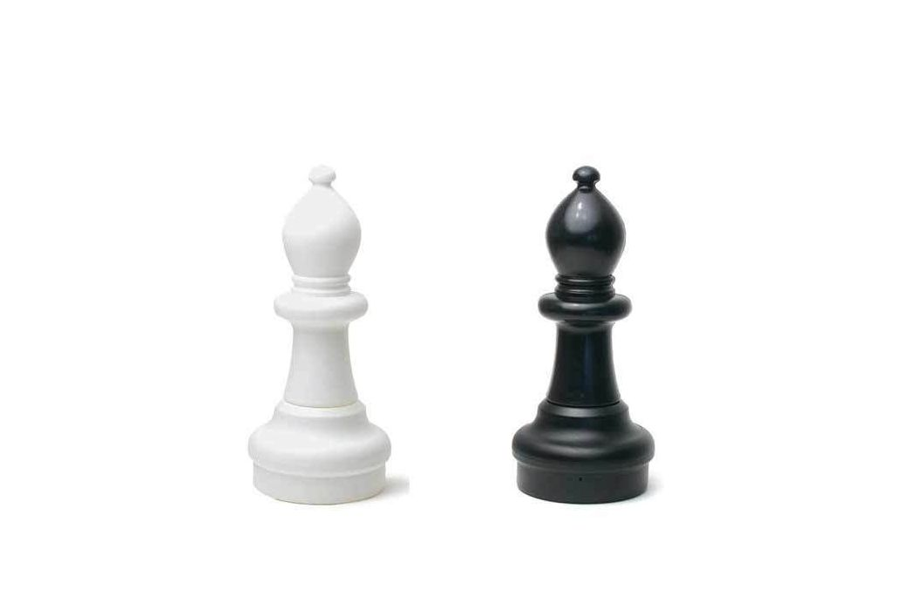

Bishop

- A bishop can move any number of squares diagonally, but cannot leap over other pieces.
- The bishop is an interesting piece because it can move as far as it wants but only on diagonals.
- It is a long-range piece and can be very dangerous!
- At the beginning of the game, each side starts with two bishops.
- The light-squared bishop for White starts on the f1-square while Black's light-squared bishop starts on the c8-square.
- White's dark-squared bishop begins on the c1-square while Black's dark-squared bishop begins on the f8-square.
- The bishop is considered a minor piece (like a knight) and is worth three points.
- It is considerably more valuable than a pawn (which is worth one point), equally valuable as a knight (also three points), but less valuable than a rook (five points) or a queen (nine points).
- The bishop is interesting because it never moves straight forward, backward or side to side.
- It cannot hop over other pieces like a knight. The bishop moves only on diagonals.
- Every bishop is confined to half of the board, as it can move only on its respective light or dark squares.
- A light-squared bishop can move only on light squares, while a dark-squared bishop can move only on dark squares.
- The two bishops work well together if they are on adjacent diagonals—look how many squares these two bishops control!
- A bishop can never change from a light-squared bishop to a dark-squared bishop or vice-versa.
- It can capture an enemy piece by moving to the occupied square and can move as many squares as it likes, as long as it is not blocked by another piece or an occupied square.